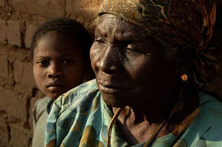

Bestemor for Barna
I Afrika har mer enn 12 millioner barn mistet mor eller far pga aids. Besteforeldrene er alt de har.
Ofte er det bestemødre uten faste inntekter som sliter tungt med å forsørge en stor flokk barnebarn.
De gjør en fantastisk innsats for sine kjære små, men trenger økonomisk hjelp. Det er det din gave
bidrar til.

Kjøp Nå
Tilbake